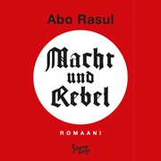

cc 2001 - 2010 Benjamin Birkenhake Digital ist besser
Ich weiß gar nicht so recht, was ich mit einem Buch wie "Macht und Rebel" anfangen soll. Zum Glück ist die erste Antwort auf derlei Fragen erstmal denkbar einfach: Lesen. Das hingegen ist nicht ganz so einfach, wie man sich das vorstellt. Gleich die erste Szene ist schmerzhaft. Rebel – ein linkdrehender, desilusionierter 30jähriger, der sein bisken Geld mit Flyern für die Untergrundsezene verdient – kauft sich eine Salatgruke, um sie sich 30 cm tief in den Hintern zu schieben. Und das ist erst der Auftakt. Zusammen mit Macht – einem untergrundaffinen 30jährigen, der unglaublich viel Geld in der Marketing-Agentur-Szene verdient, die er aber abgrundtief hasst – stößt er einen Mahlstrom den Irrsinns los.
"Alle Menschen, denen ich über den weg laufe hasse ich angrundtief. Ich hasse verflucht noch mal alle. Seit kruzem hasse ich sogar Dinge. Und Geräusche. Das Geräusch, das mich nicht nervt, gibt es gar nicht. Ich finde alles abscheulich. Ungelogen. Meine Interesse sterben aus, wie Insassen eines Altersheims, eines nach dem anderen. Und last but not least: Ich hab mich selber und mein eigenes Gewinsel derart satt, dass ich kotzen könnte. Es ist sozusagen unmöglich geworden, auf individuelle Weise zu winseln. Viel zu viele Leute winseln GENAU so wie ich."
Rebel
"Macht folgt einem schlichten Prinzip, das er zu NODDY mitgebracht hat, und das heißt Internalisierung. Die Regel lautet: Internalisiere das, wovon Du befürchtest, es könne Dir schaden. Werde zu dem, was Dich bedroht. Behalte die Initiative. Wenn jemand anfängt, über ein Gebiet zu reden, von dem Du keine Ahnung hast, finde, alles darüber hinaus und sage schließlich: 'ja', nie 'nein'. Verbinde Dich mit der Wut, die sich gegen Dich richtet, und verkaufe sie weiter, gern wieder an den, der sam wütendsten ist. Das klappt. Sie kaufen."
Macht und Rebel stellen alles auf den Kopf, drehen alles um, machen vor nichts halt. Der Roman ist eine perfekte Sammlung und Glorizizierunge all dessen, was gesellschaftlich verpöhnt ist: Drogen, Gewalt, Nationalsozialismus und Kinderpornographie. Und alle mache mit. Alle findens geil. Alle.
"[Ich] gehe hoch und putze Klo und Dusche. Ich wiederhole: Ich putze Klo und Dusche. Ich weiß gar nicht, was mich in einen solchen Zustand von offenkundiger Menschlichkeit und Optimusmus versetzt hat. Ich fasse es nicht, ich begreife es nicht. Ich arbeite. Ich schrubbe und und wienere. Ich popele Haare – meine eigenen Haare – meine eigenen Körperhaare, mariniert in Spucke und Schnodder und Sperma (sss) aus dem Abfluss. Nein, wenn ich genau nachdenke, begreife ich es doch; die Ehre für diesen Hausputz gebührt Adolf Hitler."
Für einen Roman wie diesen drängen sich die üblichen Phrasen von der "Abrechnung" mit diesem oder jenem, vor der "Anklage" gegen die Dekadenz, vom "Kampf" Rebellion gegen Kommerz, von der Sozialkritik, von Provokations-Literatur und vom Sittengemälde des 21. Jahrhundert. Aber all das ist ziemlicher Unfug und reicht nicht weit genug in das Werk und seine Wirkung hinein.

"Welche Wahlmöglichkeiten hat man heutzutage? Das haben Macht und Rebel im Laufe ihrer kurzen Freundschaft erörtert und sind zu folgendem Schluß gekommen:
Heutige Wahlmöglichkeiten
- Setz Dich einer ganzen Industrie von 'Sinnproduzenten' aus (Kritikern/Denkern/Aktivisten/Politikern etc.), die Dir erzählen, dass der Status quo ätzt und die Wekt leer und/oder sinnlos und/oder schwierig ist und 'verbesser' werden muss.
- Setz Dich einer ganzen Konsum- und Unterhaltungsindustrie aus, die Dir erzählen, dass die Welt so, wie sie ist, leicht und lustig und brauchbar und schön ist, die aber implizit auch erzählt – weil Du und alle anderen so hyprrefelexiv sind –, dass dei Welt leer und/oder sinnlos und/oder schwierig ist und 'verbessert' werden muss.
- Setz Dich einer Mischung dieser beiden Alternativen aus.
Es müsste doch möglich sein, eine weitere Alternative anzubieten, hatten Macht und Rebel gedacht, und ja, sie haben eine Antwort gefunden, die sie jetzt in dem DV-Film herausschreien, als sie gemeinsam auf die Möse und den Hinter der streng genommen dreizehnjährigen Thong abspritzen:
KRAFT DURCH FREUDE!"
Es geht nicht einfach um die Provokation. Denn der große Haken an der Sache ist der: Rebel und Macht haben leider viel zu oft Recht, um sie pauschal als Antagonisten, als abschreckendes Beispiel verurteilen zu können. Sie sind die Protagonisten des Romans, egal was sie tun. Was bleibt einem als Leser? Es wirf einen auf eine Meta-Ebene zurück. Es zerlegt moralische Kategorien und läßt einen mit dem Zweifel an Moral, mit einer Einstellung gegenüber Moral zurück, aber ohne Handlungsanweisung. Was also tun? Ich meine, ich werde jetzt wohl kaum in einen Tatoo-Laden tigern und mir den Reichsadler in den Nacken tatowieren lassen. Von den anderen Sachen mal ganz zu schweigen.
Dennoch läßt mich Macht und Rebel mit einem Ansporn zurück.
Und mit einer herzlich willkommenen Abscheu.
Was allerding all diese Überlegungen ad absurdum führt, ist die die Tatsache, dass Macht und Rebel inzwischen schon 2006 von Schorsch Kamerun bei den Münchner Kammerspielen aufgeführt wurde. Vier Jahre bevor ich den Roman überhaupt in die Hand genommen habe, ist er bereits vom der Gesellschaft in der akzeptiertestens aller Formen assimiliert worden.
Kommentare